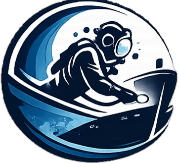
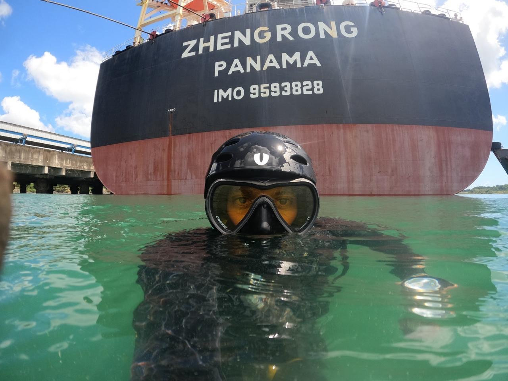

Salvador · Bahia · Brasil
Underwater vessel maintenance
2026

BLUE OCEANDIVING
Underwater hull maintenance for large vessels
Port of Salvador · no drydocking · vessel stays in the water
Blue Ocean Diving Ltda01

Who we are
Blue Ocean Diving was opened by a team that already worked together, in commercial diving, for over a decade. They left the company where they were and started their own. We do not hide that the CNPJ is recent. We put the experience of the divers in front of it.
The work is underwater maintenance and repair of vessels and floating structures, carried out with the ship still in the water. No drydocking, no vessel downtime, no missed window.
Between them the team has already delivered port operations along the Brazilian coast, refinery support, subsea pipeline protection and pier foundation work.


What we do below the waterline
Equipment
| Hull polisher HPJ 40 | Orbital hydraulic motor · 110 bar · 40 LPM displacement · stainless steel carcass |
|---|---|
| Hull polisher HPJ 41 | Orbital hydraulic motor · 110 bar · 20 to 25 LPM displacement · stainless steel carcass |
| Polisher PHJ 20 | 3,500 rpm · 1.8 kW · 20 L/min oil flow · 110 bar |
| Brush ECA / GMF | 1,700 rpm · naval plywood disk · carbon steel bristles · 380 mm |
| Soft brush | 1,700 rpm · naval plywood disk · soft cable bristles · 380 mm |
| Soft mixed brush | 1,700 rpm · soft and steel cable bristles · 380 mm |
| Two hydraulic hoses MHTP | Thermoplastic · 5/8 · 2.1/4 final gauge · polyethylene spiral coating |
| Triple hydraulic unit | Three-cylinder diesel engine · electric starter · carbon steel skid · 200 L tank |
| CCTV SVHD04 | 960 TVL camera · LED illumination |
| KMB 18 full face helmet | Two units, with Mersh Marine |
| Illumination and camera | Two sets · LED 1320 · CSHD 300 camera |
| Complete umbilical | Two sets · communication, light source and camera |
| Air tank RAC150 | 150 L · 250 psi |
| Diesel compressor | 25 PCM · 200 psi |
How the result is verified
Once the cleaning is finished, a representative from the ship may come aboard our support vessel and check the result live on our CCTV. Nothing is taken on trust.
The report with photographs is sent 3 to 4 business days after the service is completed.
| Payment | Direct to Blue Ocean, with no local shipping agency in between |
|---|---|
| Language | Portuguese and English, on the same contact |
| Drydocking | None. Vessel stays in the water |
| Coverage | Port of Salvador and Baía de Todos os Santos anchorage |

We come back with scope and schedule.